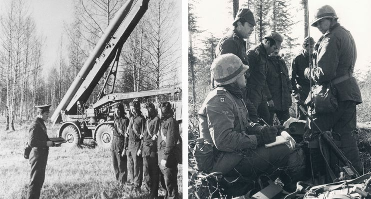
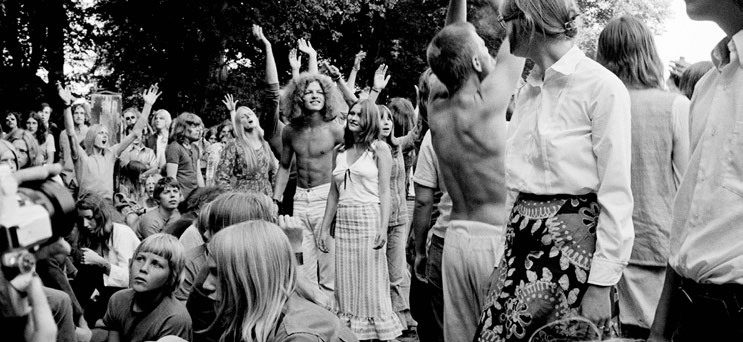
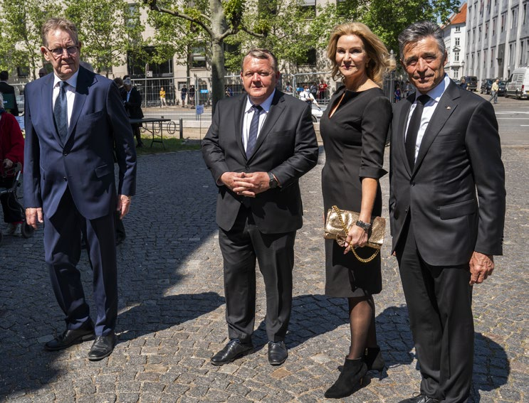
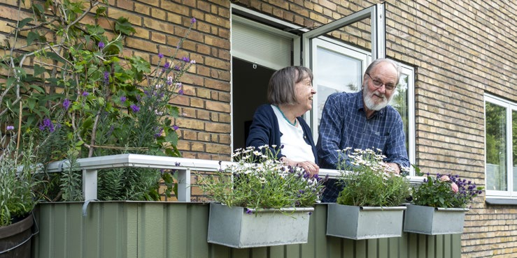
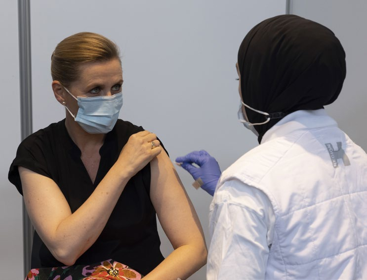

Fakta-ark 21: Danmarks
Áudio
sidde 115
Fakta-ark 21: Danmarks historie efter 1945
Læremateriale Til Medborgerskabsprøven

sidde 116
Læremateriale Til Medborgerskabsprøven Fakta-Ark 21: Danmarks Historie Efter 1945
Dette fakta-ark handler om: • Vigtige perioder, begivenheder og personer i Danmarks historie efter 1945
Den Kolde Krig
Efter 2. Verdenskrig stoppede Danmark sin neutralitetspolitik* og blev i 1949 medlem af forsvarsalliancen NATO. Danmark havde også forsøgt at holde sig neutral under 2. Verdenskrig, men blev besat af Tyskland. Alliancen bestod af USA, Canada og en række lande i Vesteuropa. Over for NATO stod Warszawa-pagten med Sovjetunionen og en række lande i Østeuropa. Ved at komme med i NATO valgte Danmark side i Den Kolde Krig, mellem de to nye supermagter USA og Sovjetunionen. Den Kolde Krig var blandt andet en kamp om, hvem der havde det største og bedste militær og flest atomvåben. Men det var også en kamp mellem to forskellige politiske ideologier – på den ene side Vestens liberale markeds økonomi*og på den anden side Sovjets kommunistiske planøkonomi*.
Den økonomiske hjælp fra USA var med til at modernisere det danske landbrug efter 2. Verdenskrig. Man fik traktorer, mejetærskere og andre maskiner i stedet for heste. Derfor blev en stor del af arbejdskraften* på landet unødvendig, så mange flyttede fra landet ind til byerne i 1950’erne for at finde arbejde der.Sovjetiske tropper på øvelse i Polen og canadi
Fra 1948 til 1951 gav USA store pengebeløb – med den såkaldte Marshall-plan – til en række lande i Vesteuropa, blandt andet Danmark. Pengene fra Mars hall-planen skulle genopbygge de mange byer, huse, veje, fabrikker mm., som blev ødelagt under 2. Verdenskrig. Og så skulle USA's plan forhindre* kommunis mens udbredelse til flere lande. Danmarks Kommunistiske Parti fik dog aldrig langvarig succes blandt vælgerne, og i 1958-59 meldte en stor gruppe af partiets medlemmer sig ud og dannede Socialistisk Folkeparti (SF).
Sovjetiske tropper på øvelse i Polen og canadiske tropper på i Vest-Tyskland under Den Kolde Krig.

sidde 117
Økonomisk Vækst Og Velfærdsstat
Læremateriale Til Medborgerskabsprøven Fakta-Ark 21: Danmarks Historie Efter 1945
Fra slutningen af 1950’erne var der høj økonomisk vækst* i Europa og også i Danmark. Fra 1957 til 1973 oplevede danskerne en meget stor økonomisk frem gang. Produktionen voksede, og der var arbejde nok til næsten alle. De fleste mennesker fik flere penge, og mange havde nu råd til at købe tv, køleskab, vaskemaskine, bil, sommerhus eller rejse på ferie i udlandet. Perioden kaldes derfor også ’De glade 60’ere’.
Den offentlige sektor velfærd blev også udbygget. Det var især i 1960’erne og 1970’erne, at den danske stat blev til den velfærdsstat, som vi kender i dag. Blandt andet kom der ”Folkepension”, det vil sige pension til alle ældre, og der blev bygget flere vuggestuer, børnehaver og plejehjem. Der var også mange flere, der kunne uddanne sig efter folkeskolen, det vil sige, at de kom på gymnasiet, erhvervsskoler og handelsskoler og uddannede sig fx til sygeplejersker, lærere eller ingeniører.
Mange kvinder kom i samme periode ud på arbejdsmarkedet. I midten af 1900tallet havde langt de fleste gifte kvinder passet hjem og børn, mens mændene gik på arbejde uden for hjemmet. Fra 1960’erne fik flere kvinder uddannelse og arbejde, mens mange flere børn blev passet i en af de mange nye vugge stuer, børnehaver og fritidshjem. Der blev også hentet arbejdskraft* i udlandet, og mange udlændinge kom til Danmark for at arbejde. De fleste kom fra Tyrkiet, ex-Jugoslavien eller Pakistan.
Fra slutningen af 1960’erne gjorde mange unge mennesker oprør* mod samfun dets normer og værdier, som de mente var gammeldags. De syntes for eksempel, at en familie kunne være anderledes end en ”kernefamilie” med mor, far og børn, og nye måder at leve sammen på blev mere accepteret: Par kunne bo sammen uden at være gift, og nogle lavede kollektiver, hvor mange voksne og børn boede sammen og havde fælles økonomi.Unge mennesker til festival i København i 1971. Foto: Jørgen Andel/Scanpix Ritz
Ungdomsoprør Og Kvindebevægelse
Unge mennesker til festival i København i 1971. Foto: Jørgen Andel/Scanpix Ritzau.
sidde 118
Sex før ægteskabet blev også mere accepteret, og i 1966 blev p-pillen intro duceret i Danmark. Nu kunne kvinderne selv styre, hvornår de blev gravide, og p-pillen fik stor betydning for kvinders seksuelle frihed. Studerende på univer siteterne gjorde oprør og ville have indflydelse* på, at der blev undervist på nye måder og indholdet i studierne. Den traditionelle opdragelse af børn i familierne og skolerne blev erstattet af en ny pædagogik, hvor barnet og de voksne samar bejdede mere. I 1967 blev det forbudt at slå børn i skolen. Det var dog først 30 år senere, i 1997, at det blev forbudt for forældre at slå deres egne børn.
Læremateriale Til Medborgerskabsprøven Fakta-Ark 21: Danmarks Historie Efter 1945
Kvindebevægelsen med for eksempel ’rødstrømpebevægelsen’* voksede sig stærk, og ligestilling mellem mænd og kvinder var et vigtigt politisk emne i 1970’erne. En meget vigtig sejr for kvindebevægelsen var, da der i 1973 blev indført fri abort, så kvinder nu selv kunne vælge, om de ville afbryde en graviditet (frem til 12. uge af graviditeten). Den fri abort gælder stadigvæk, og i 2025 er grænsen for den fri abort blevet hævet fra den 12.til den 18. graviditetsuge.
En anden vigtig sejr var, da Folketinget i 1976 vedtog en lov om ligeløn, der gav mænd og kvinder ret til den samme løn for det samme arbejde. Før havde det været lovligt, at kvinder tjente mindre end deres mandlige kollegaer. For eksempel tjente kvinder, der lavede sko i 1971, 549 kroner om ugen, mens mænd tjente 630 kroner om ugen, selvom de udførte det samme arbejde.
Eu, Krise Og Indvandring
I 1973 blev Danmark medlem af EF (EU). Det skete efter en folkeafstemning, hvor danskerne skulle stemme ja eller nej til, om Danmark skulle være medlem. Et flertal på 63,4 procent stemte ja til EF. For ja-sigerne var det vigtigt, at Danmark fik bedre muligheder for at handle med andre europæiske lande, og at dansk landbrug kunne få økonomisk støtte fra EF. Nej-sigerne mente, at Danmark opgav noget af sin ret til at bestemme selv, og at medlemskabet ville gå ud over velfærdsstaten og danskernes nationale identitet*.
I løbet af 1970’erne blev Danmark, som mange andre vestlige lande, ramt af en økonomisk krise. Krisen kom især fordi priserne på olie steg meget i 1973 og igen i 1979 på grund af krige og politiske problemer i Mellemøsten. Olie blev brugt i industrien og til at varme boliger op, og Danmark producerede dengang kun meget lidt olie.
Socialdemokratiet havde siddet i regering og haft statsministerposten de fleste (i alt 41) år mellem 1929 og 1982, mens de borgerlige partier (Venstre og Det Konservative Folkeparti) kun havde dannet regering i kortere perioder. Men i 1982 fik Danmark en borgerlig regering, som sad i over ti år (frem til 1993). Siden 1982 har der i alt været 17 år med en socialdemokratisk statsminister og 24 år med en borgerlig statsminister. Vigtige politiske emner gennem 1980’erne var Danmarks økonomiske problemer med underskud på de offentlige budgetter og Danmarks handel med udlandet.
Fire tidligere statsministre, Poul Nyrup Rasmussen (1993-2001), Lars Løkke Rasmussen (2009-11 og 2015-19), Helle Thorning Schmidt (2011-15) og Anders Fogh Rasmussen (2001-09) ankommer til en femte statsministers Poul Schlüters (1982-93) begravelse. Foto: Martin Sylvest/Scanpix Ritzau.

sidde 119
Læremateriale Til Medborgerskabsprøven Fakta-Ark 21: Danmarks Historie Efter 1945
Fire tidligere statsministre, Poul Nyrup Rasmussen (1993-2001), Lars Løkke Rasmussen (2009-11 og 2015-19), Helle Thorning Schmidt (2011-15) og Anders Fogh Rasmussen (2001-09) ankommer til en femte statsministers Poul Schlüters (1982-93) begravelse. Foto: Martin Sylvest/Scanpix Ritzau.
Der var også stærke politiske bevægelser som fredsbevægelsen, der arbejdede mod oprustning* og våbenkapløb* mellem stormagterne, og miljøbevægelsen, der fx var imod atomkraft. I 1985 besluttede Folketinget, at der ikke skulle bygges atomkraftværker i Danmark.
I 1980’erne kom der flere og flere indvandrere til Danmark, og i større danske byer var der bydele, hvor mange beboere havde en anden etnisk baggrund end dansk. Samtidig havde mange flygtninge og indvandrere svært ved at finde arbejde og få en uddannelse. Mange danskere følte, at nogle indvandrere havde en meget anderledes kultur, og at de ikke altid var gode nok til at lære det danske sprog. I løbet af 1990’erne fyldte diskussionen om indvandrere mere og mere i den offentlige debat. Ønsket om ændringer i udlændinge- og integrations politikken betød, at Dansk Folkeparti blev valgt ind i Folketinget første gang i 1998. Diskussionen fortsatte ind i det nye årtusinde og forskellige danske rege ringer strammede udlændingepolitikken. Stramningerne betød blandt andet
- at det blev sværere at få udenlandsk familie til landet (familiesammenføring)
- at nytilkomne uden arbejde ikke kunne få fuld kontanthjælp men fik et lavere beløb
- at man skulle have boet længere tid i Danmark for at kunne få dansk indfødsret (statsborgerskab) og have haft arbejde det meste af tiden, ikke begå alvorlig kriminalitet, lære det danske sprog og have viden om dansk historie, samfund, kultur og om danske værdier som demokrati og ligestilling.

sidde 120
Nye Økonomiske Udfordringer
Læremateriale Til Medborgerskabsprøven Fakta-Ark 21: Danmarks Historie Efter 1945
I løbet af 1990’erne begyndte Danmarks økonomi at blive bedre. Økonomien voksede hurtigere, flere kom i arbejde, og staten havde igen flere indtægter* end udgifter*. Produktionen af olie og gas fra Nordsøen betød desuden, at Danmark kunne sælge mere olie og gas i udlandet, end landet købte.
Efter cirka 15 år med god økonomi blev Danmark i 2008 ramt af en international finanskrise. Krisen startede i USA, men spredte sig hurtigt til Europa. I Danmark faldt værdien af landets samlede produktion med fem procent i 2008-09. Det var den største tilbagegang for dansk økonomi siden 2. Verdenskrig. Krisen betød, at flere blev arbejdsløse. Da krisen begyndte, var arbejdsløsheden den laveste i 30 år, og der var et stort overskud på statens budget. Senere kom der underskud, men Danmark fik alligevel ikke lige så store problemer med underskud og gæld som mange andre europæiske lande. Fra omkring 2015 er der igen kommet overskud på statens budget, og arbejdsløsheden i Danmark er faldet.
Et af de største problemer for Danmark og de fleste andre europæiske lande er, at der bliver mange flere ældre i forhold til antallet af dem, der er i den alder (15 til 64 år), hvor man typisk arbejder og betaler skat. Det skyldes for det første at befolkningen lever længere, så vi bliver ældre og ældre, men også, at der bliver født færre børn end før.
I 2024-25 kunne kvinder i Danmark forvente at leve 83,9 år mod 76,6 år i 197374. Mænd kunne forvente at leve i 80,3 år mod 70,8 år i 1973-74. I samme periode faldt fødselstallet, det vil sige, at hver kvinde i gennemsnit fødte færre børn (1,5 i 2025 og 1,9 i 1973). Desuden starter de fleste i dag arbejdslivet i en senere alder, fordi de uddanner sig i flere år end tidligere. Derfor er der de sidste cirka 35 år lavet en række politiske reformer, der skal få flere ud på arbejdsmarkedet. For eksempel skal man være ældre end tidligere for at gå på pension, og perioden, hvor man kan få økonomisk hjælp fra arbejdsløshedskassen (a-kassen), hvis man bliver arbejdsløs, er blevet kortere. Og så er skatten på arbejdsindkomst blevet sænket for at gøre det mere attraktivt at arbejde.Pensionister på altan i lejlighed i København. Foto: Christian
Pensionister på altan i lejlighed i København. Foto: Christian Lindgren/Ritzau Scanpix.

sidde 121
Corona
Læremateriale Til Medborgerskabsprøven Fakta-Ark 21: Danmarks Historie Efter 1945
En væsentlig udfordring i årene 2020-22 var sygdommen covid-19 – også kaldet corona. Sygdommen blev opdaget i Kina i 2019, og i Danmark blev det første tilfælde registreret i februar 2020. Regeringen, Folketinget, Sundheds styrelsen og andre prøvede at bekæmpe sygdommen med forskellige tiltag, der skulle bekæmpe smitterisikoen, herunder, at folk fx ikke var sammen med for mange andre mennesker, at folk holdt afstand til hinanden, og at de sprittede hænder af. På denne måde prøvede man at forhindre*, at for mange blev smittet på én gang, så der ikke var flere, der skulle behandles på samme tid, end syge husene havde plads til.
Et andet vigtigt middel til at bekæmpe sygdommen var at vaccinere befolk ningen. Det tog kun cirka et år fra sygdommens begyndelse at udvikle vacciner mod coronavirus, og i december 2020 blev den første dansker vaccineret. Siden da er de fleste (cirka 90 procent af Danmarks befolkning) vaccineret med to eller tre stik.Statsminister Mette Frederiksen vaccineres mod coronavirus. Foto: Statsministeriet.
Man kunne heller ikke rejse så frit mellem Danmark og udlandet som normalt. Skolerne var desuden lukkede i perioder, og eleverne blev undervist hjemme via internettet. Mange restauranter, caféer, museer og teatre var lukkede i peri oder, fodboldkampe og anden sport foregik uden tilskuere, og mange arbejdede hjemmefra. Sundhedsvæsenet testede dagligt tusindvis af mennesker for at finde frem til de smittede.
Statsminister Mette Frederiksen vaccineres mod coronavirus. Foto: Statsministeriet.
Fonte: Læremateriale til Medborgerskabsprøven, SIRI.